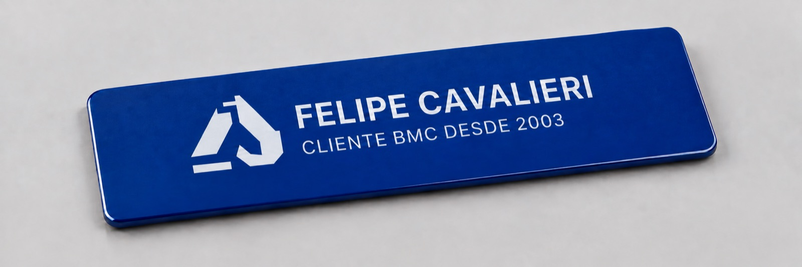
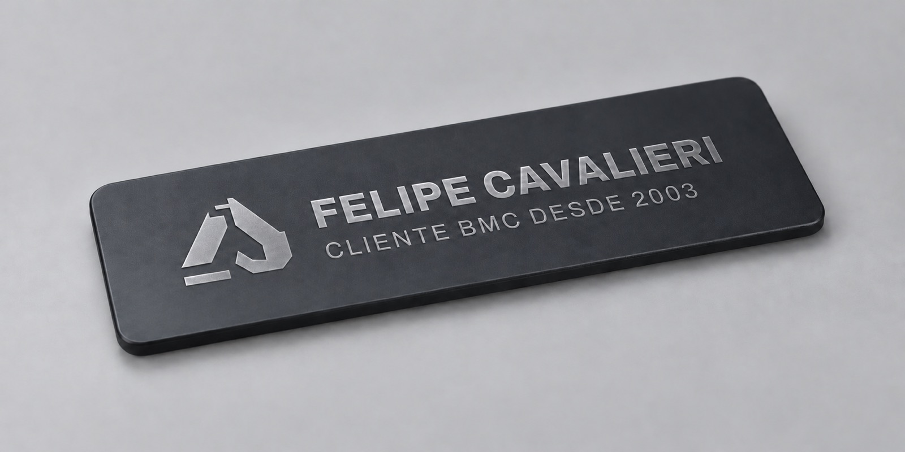
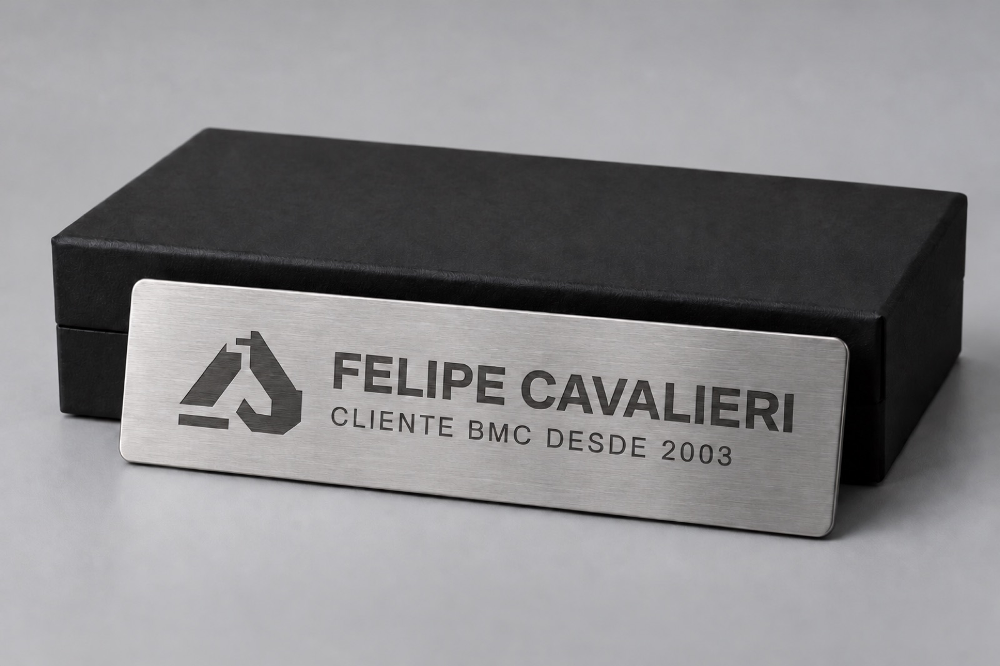
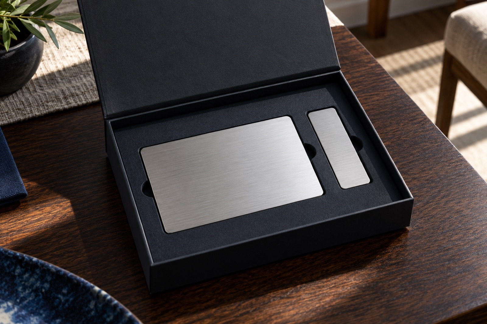
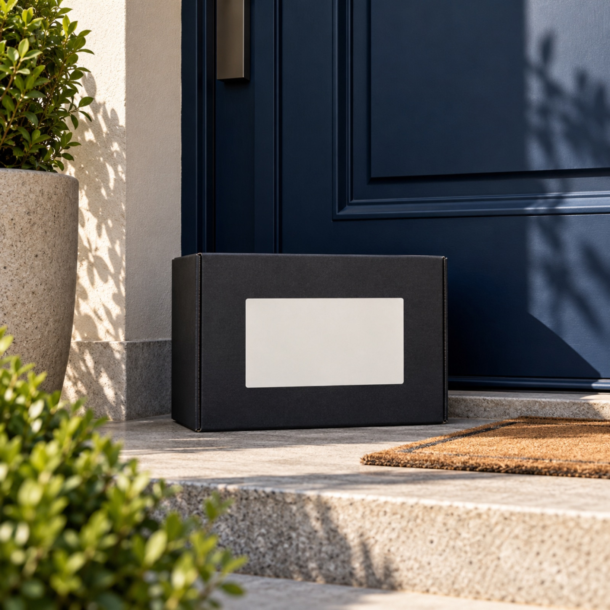

BMC HYUNDAIPrograma de relacionamento
Uma relação que acompanha o crescimento
BMC
Club
Programa de relacionamento para clientes BMC Hyundai
BMC STARTBMC SELECTBMC PRIVATE
02 — A ideiaBMC Club
O ponto de partida
O cliente já precisa cuidar da máquina. Vamos fazer ele cuidar com a gente.
01
ReconhecerQuem faz revisão, compra peça original e cresce a frota com a BMC.
02
Reter margemO ganho vem do pós-venda feito dentro de casa, não de desconto na venda da máquina.
03
AcompanharQuanto mais o cliente cresce, mais a BMC entrega para ele.
03 — Como funcionaUma lógica simples
Três regras para tornar o relacionamento visível
O que o cliente já faz
passa a contar.
01
Tudo vira pontosMáquina, revisão, serviço, peça original, implemento e indicação.
02
Os pontos definem o nívelNão viram dinheiro nem prêmio. O benefício vem do nível.
03
Conta por anoZera em 1º de janeiro. O total do ano define o nível do ano seguinte.
04 — Os três níveisReconhecimento progressivo
A entrega cresce com a relação
Três níveis.
Um só clube.
BMC START
Todo cliente BMC entra
- Entra no BMC Club na entrega da máquina.
- Central de relacionamento e técnico mais próximo.
- Comunicados, Minha conquista e certificado digital.
- Comunidade e Academy.

BMC SELECT
A partir de 1.000 pontos/ano
- Desconto fixo em peças e serviços.
- Prioridade no chamado (SLA).
- Disponibilidade de técnico.
- Possível desconto no deslocamento.
- Cartão SELECT.

BMC PRIVATE
Mínimo de 5.000 pontos/ano para manter
- Descontos maiores em peças, serviços e máquina.
- Prioridade máxima e treinamentos exclusivos.
- Experiências com parceiros.
- Presente em casa a cada 2–3 meses.
- Convite em aço.

05 — O que gera pontosEtiqueta de peso: a calibrar
A régua começa no comportamento
Todo movimento de cuidado
faz o cliente subir de nível.
Compra de máquinaa calibrar Revisão no prazoa calibrar Serviço e reparoa calibrar Implementos e acessóriosa calibrar Indicação que vira compraa calibrar Treinamento concluídoa calibrar 06 — Subir, manter, cairA leitura precisa ser contínua
A régua do relacionamento
O cliente sabe onde está
e qual é o próximo marco.
0 · START1.000 · SELECT5.000+ · PRIVATE
SobeBateu a meta do ano → sobe no ano seguinte.
MantémPRIVATE se mantém com 5.000 pontos no ano.
DesceFicou abaixo do mínimo → volta um nível.
“Faltam X pontos para manter seu nível.”
A progressão precisa ser visível o tempo todo.
07 — A jornada de um clienteExemplo de progressão
O comportamento já existe
Um cliente. Três anos.
Mais valor em cada passo.
Ano 1
Compra a 1ª máquina, entra no START e faz todas as revisões na BMC.
Ano 2
Chega ao SELECT: prioridade no chamado e desconto em peças e serviços.
Ano 3
Compra a 2ª e a 3ª máquina, consome pós-venda da frota e entra no PRIVATE.
O cliente faz o que já precisa fazer.
A BMC retém margem e relacionamento.
08 — O que o cliente recebeExperiência que materializa a relação
Do digital ao tangível
O nível aparece
na vida do cliente.

Convite PRIVATE em aço escovadoCartão SELECT
Na porta do clienteNo START, tudo começa 100% digital: central, comunicados, certificado e comunidade.
09 — O que precisamos de vocêsPróxima decisão
Ajudem a calibrar
A melhor versão nasce
com o time que entrega.
- Peso de cada linha em pontos
- Descontos possíveis por nível
- Prioridade de atendimento (SLA, km do técnico)
- Orçamento de experiências do PRIVATE
- Clientes PRIVATE da largada
10 minutos · responda até sextadocs.google.com/forms/d/e/1FAIpQLSdNteF_ETzVxc-VlijFN13fArWXJfVydnlKXo2dL-emB2p8Sw/viewform
10 — Próximos passosDa proposta à largada
Uma agenda curta para colocar de pé
Três marcos para
começar em janeiro.
Novembro
Feedback do time e calibragem das regras.
Dezembro
Lista dos clientes PRIVATE da largada e convites.
Janeiro
Lançamento; a contagem de pontos do ano começa.
BMC Club